Объём куба равен $512$. Найдите площадь его поверхности.
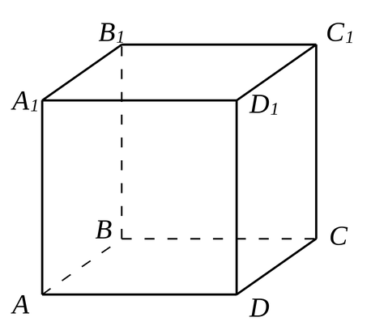
Свои задачи matbank по типам заданий ФИПИ, ответы проверены. Номера задач постоянные — их можно задавать, например: «аналоги к № 3: 2, 5, 11».
Объём куба равен $512$. Найдите площадь его поверхности.

Два ребра прямоугольного параллелепипеда равны $2$ и $6$, а его диагональ равна $11$. Найдите третье ребро параллелепипеда.
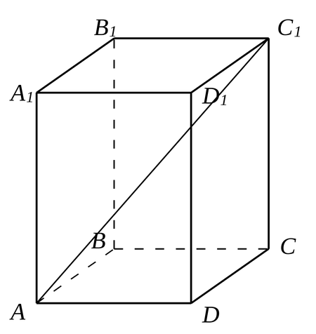
Во сколько раз увеличится объём шара, если его радиус увеличить в $3$ раза?
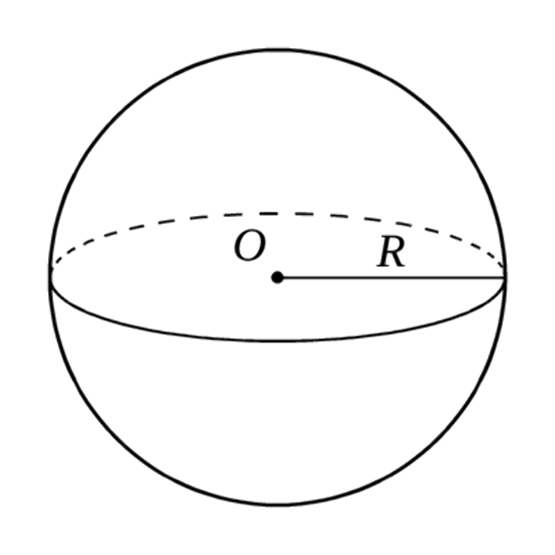
Объём конуса равен $8$. Радиус основания конуса увеличили в $2$ раза, а высоту уменьшили в $2$ раза. Найдите объём получившегося конуса.
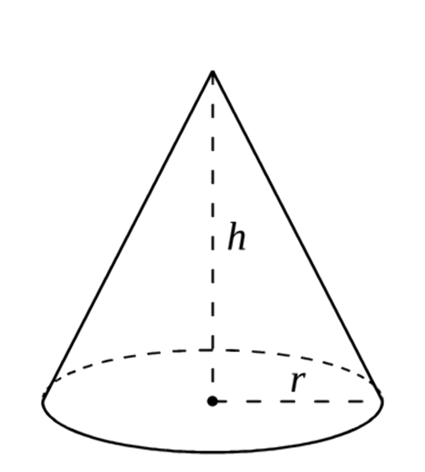
В цилиндрическом сосуде уровень жидкости достигает $18$ см. На какой высоте будет находиться уровень жидкости, если её перелить во второй цилиндрический сосуд, диаметр основания которого в $3$ раза больше диаметра первого? Ответ выразите в сантиметрах.
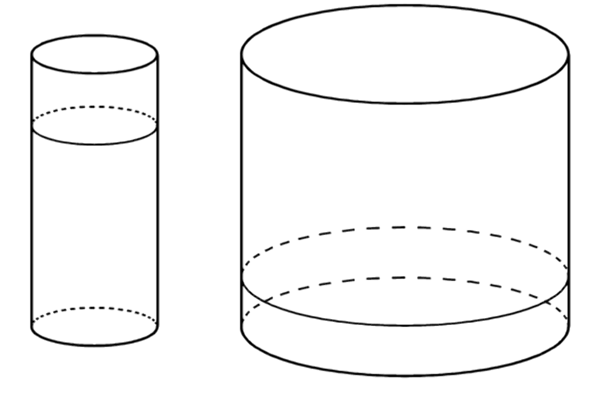
Объём куба равен $125$. Найдите площадь его поверхности.
Рёбра прямоугольного параллелепипеда равны $2$, $4$ и $4$. Найдите его диагональ.
Во сколько раз увеличится объём шара, если его радиус увеличить в $2$ раза?
Объём первого цилиндра равен $18$. У второго цилиндра радиус основания в $3$ раза больше, а высота в $3$ раза меньше, чем у первого. Найдите объём второго цилиндра.
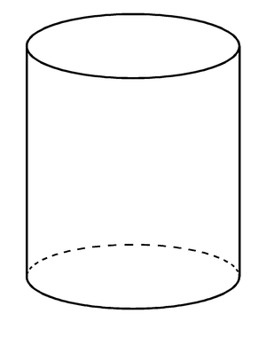
В цилиндрическом сосуде уровень жидкости достигает $48$ см. На какой высоте будет находиться уровень жидкости, если её перелить во второй цилиндрический сосуд, диаметр основания которого в $4$ раза больше диаметра первого? Ответ выразите в сантиметрах.
Площадь поверхности куба равна $384$. Найдите его объём.
Два ребра прямоугольного параллелепипеда равны $3$ и $4$, а его диагональ равна $13$. Найдите третье ребро параллелепипеда.
Во сколько раз увеличится площадь поверхности шара, если его радиус увеличить в $3$ раза?
Объём первого цилиндра равен $6$. У второго цилиндра радиус основания в $2$ раза больше, а высота в $2$ раза меньше, чем у первого. Найдите объём второго цилиндра.
В цилиндрическом сосуде уровень жидкости достигает $36$ см. На какой высоте будет находиться уровень жидкости, если её перелить во второй цилиндрический сосуд, диаметр основания которого в $3$ раза больше диаметра первого? Ответ выразите в сантиметрах.
Площадь поверхности куба равна $294$. Найдите его объём.
Два ребра прямоугольного параллелепипеда равны $2$ и $5$, а его диагональ равна $15$. Найдите третье ребро параллелепипеда.
Во сколько раз увеличится объём куба, если его ребро увеличить в $2$ раза?
Объём конуса равен $24$. Радиус основания конуса увеличили в $3$ раза, а высоту уменьшили в $2$ раза. Найдите объём получившегося конуса.
В цилиндрическом сосуде уровень жидкости достигает $32$ см. На какой высоте будет находиться уровень жидкости, если её перелить во второй цилиндрический сосуд, диаметр основания которого в $2$ раза больше диаметра первого? Ответ выразите в сантиметрах.
Площадь поверхности куба равна $486$. Найдите его объём.
Два ребра прямоугольного параллелепипеда равны $4$ и $4$, а его диагональ равна $9$. Найдите третье ребро параллелепипеда.
Во сколько раз увеличится объём куба, если его ребро увеличить в $4$ раза?
Объём конуса равен $18$. Радиус основания конуса увеличили в $3$ раза, а высоту уменьшили в $3$ раза. Найдите объём получившегося конуса.
В цилиндрическом сосуде уровень жидкости достигает $64$ см. На какой высоте будет находиться уровень жидкости, если её перелить во второй цилиндрический сосуд, диаметр основания которого в $4$ раза больше диаметра первого? Ответ выразите в сантиметрах.
Объём куба равен $216$. Найдите площадь его поверхности.
Рёбра прямоугольного параллелепипеда равны $2$, $6$ и $9$. Найдите его диагональ.
Во сколько раз увеличится площадь поверхности шара, если его радиус увеличить в $5$ раз?
Объём первого цилиндра равен $20$. У второго цилиндра радиус основания в $2$ раза больше, а высота в $2$ раза меньше, чем у первого. Найдите объём второго цилиндра.
В цилиндрическом сосуде уровень жидкости достигает $18$ см. На какой высоте будет находиться уровень жидкости, если её перелить во второй цилиндрический сосуд, диаметр основания которого в $2$ раза больше диаметра первого? Ответ выразите в сантиметрах.
Площадь поверхности куба равна $54$. Найдите его объём.
Рёбра прямоугольного параллелепипеда равны $1$, $2$ и $2$. Найдите его диагональ.
Во сколько раз увеличится площадь поверхности куба, если его ребро увеличить в $4$ раза?
Объём конуса равен $40$. Радиус основания конуса увеличили в $3$ раза, а высоту уменьшили в $2$ раза. Найдите объём получившегося конуса.
В цилиндрическом сосуде уровень жидкости достигает $16$ см. На какой высоте будет находиться уровень жидкости, если её перелить во второй цилиндрический сосуд, диаметр основания которого в $2$ раза больше диаметра первого? Ответ выразите в сантиметрах.
Объём куба равен $64$. Найдите площадь его поверхности.
Рёбра прямоугольного параллелепипеда равны $4$, $20$ и $22$. Найдите его диагональ.
Во сколько раз увеличится площадь поверхности куба, если его ребро увеличить в $2$ раза?
Объём конуса равен $15$. Радиус основания конуса увеличили в $2$ раза, а высоту уменьшили в $2$ раза. Найдите объём получившегося конуса.
В цилиндрическом сосуде уровень жидкости достигает $36$ см. На какой высоте будет находиться уровень жидкости, если её перелить во второй цилиндрический сосуд, диаметр основания которого в $2$ раза больше диаметра первого? Ответ выразите в сантиметрах.
Объём куба равен $343$. Найдите площадь его поверхности.
Рёбра прямоугольного параллелепипеда равны $4$, $4$ и $7$. Найдите его диагональ.
Во сколько раз увеличится объём куба, если его ребро увеличить в $5$ раз?
Объём первого цилиндра равен $8$. У второго цилиндра радиус основания в $2$ раза больше, а высота в $2$ раза меньше, чем у первого. Найдите объём второго цилиндра.
В цилиндрическом сосуде уровень жидкости достигает $32$ см. На какой высоте будет находиться уровень жидкости, если её перелить во второй цилиндрический сосуд, диаметр основания которого в $4$ раза больше диаметра первого? Ответ выразите в сантиметрах.
Объём куба равен $27$. Найдите площадь его поверхности.
Рёбра прямоугольного параллелепипеда равны $2$, $5$ и $14$. Найдите его диагональ.
Во сколько раз увеличится площадь поверхности куба, если его ребро увеличить в $5$ раз?
Объём первого цилиндра равен $20$. У второго цилиндра радиус основания в $2$ раза больше, а высота в $4$ раза меньше, чем у первого. Найдите объём второго цилиндра.
В цилиндрическом сосуде уровень жидкости достигает $36$ см. На какой высоте будет находиться уровень жидкости, если её перелить во второй цилиндрический сосуд, диаметр основания которого в $4$ раза больше диаметра первого? Ответ выразите в сантиметрах.
В прямоугольном параллелепипеде $ABCDA_1B_1C_1D_1$ известно, что $AB=6$, $BC=7$, $AA_1=8$. Найдите объём многогранника, вершинами которого являются точки $A, B, C, B_1$.

Найдите объём многогранника, вершинами которого являются вершины $A, B, C, C_1$ правильной треугольной призмы $ABCA_1B_1C_1$, площадь основания которой равна $3$, а боковое ребро равно $11$.
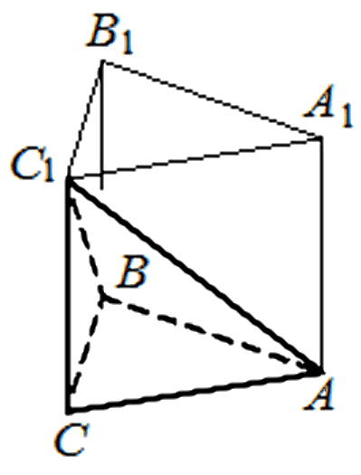
Объём куба равен $160$. Найдите объём треугольной призмы, отсекаемой от куба плоскостью, проходящей через середины двух рёбер, выходящих из одной вершины, и параллельной третьему ребру, выходящему из этой же вершины.
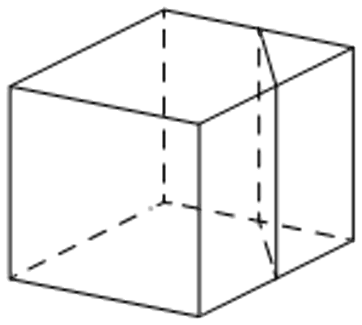
Около конуса описана сфера (сфера содержит окружность основания конуса и его вершину). Центр сферы находится в центре основания конуса. Радиус сферы равен $63\sqrt{2}$. Найдите длину образующей конуса.
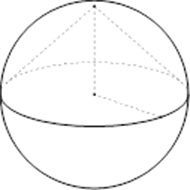
Через среднюю линию основания треугольной призмы, объём которой равен $104$, проведена плоскость, параллельная боковому ребру. Найдите объём отсечённой треугольной призмы.
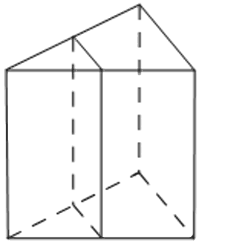
Цилиндр и конус имеют общие основание и высоту. Высота цилиндра равна радиусу основания. Площадь боковой поверхности конуса равна $30\sqrt{2}$. Найдите площадь боковой поверхности цилиндра.
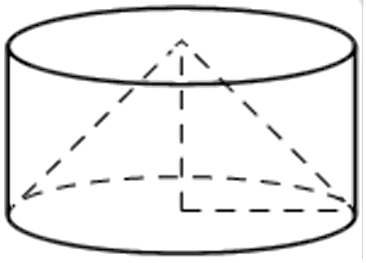
Шар вписан в цилиндр. Площадь полной поверхности цилиндра равна $66$. Найдите площадь поверхности шара.
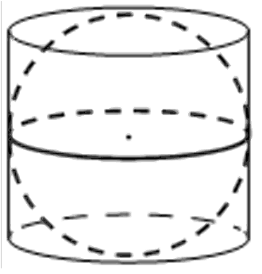
Цилиндр вписан в прямоугольный параллелепипед. Радиус основания цилиндра равен $8$, высота цилиндра равна $5$. Найдите объём параллелепипеда.
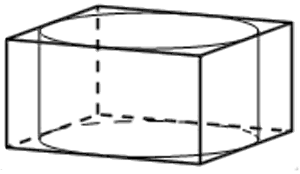
Дано два цилиндра. Объём первого цилиндра равен $15$. У второго цилиндра высота в $3$ раза меньше, а радиус основания в $4$ раза больше, чем у первого. Найдите объём второго цилиндра.
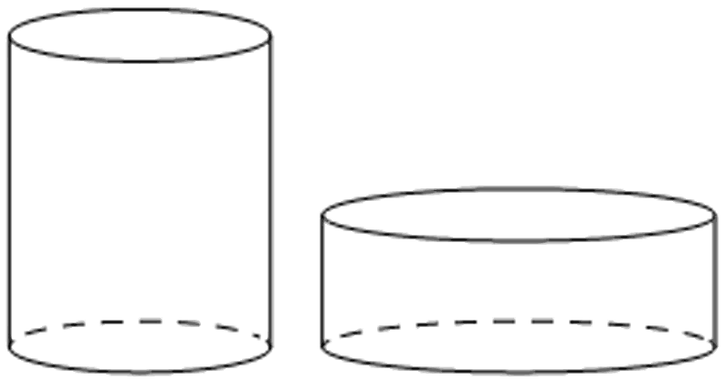
Во сколько раз увеличится объём конуса, если радиус его основания увеличится в $10$ раз, а высота останется прежней?
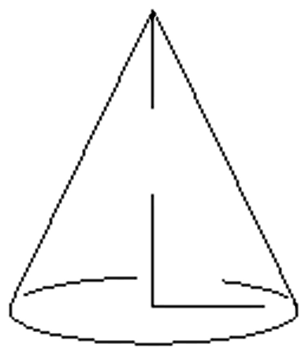
В прямоугольном параллелепипеде $ABCDA_1B_1C_1D_1$ известно, что $AB=9$, $BC=8$, $AA_1=4$. Найдите объём многогранника, вершинами которого являются точки $A, B, C, D, B_1$.
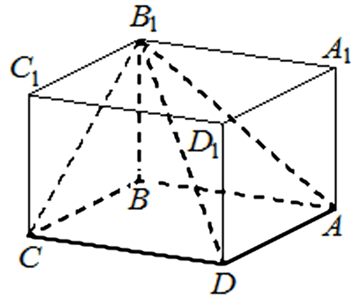
Найдите объём многогранника, вершинами которого являются вершины $B, C, A_1, B_1, C_1$ правильной треугольной призмы $ABCA_1B_1C_1$, площадь основания которой равна $6$, а боковое ребро равно $11$.
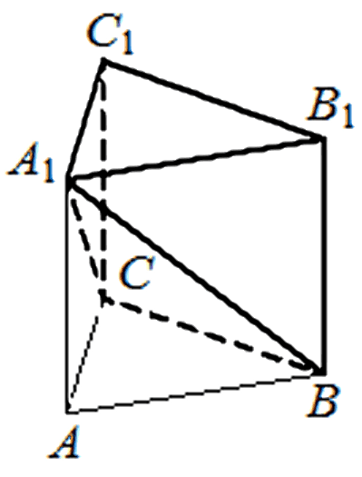
Объём куба равен $296$. Найдите объём треугольной призмы, отсекаемой от куба плоскостью, проходящей через середины двух рёбер, выходящих из одной вершины, и параллельной третьему ребру, выходящему из этой же вершины.
Около конуса описана сфера (сфера содержит окружность основания конуса и его вершину). Центр сферы находится в центре основания конуса. Образующая конуса равна $32\sqrt{2}$. Найдите радиус сферы.
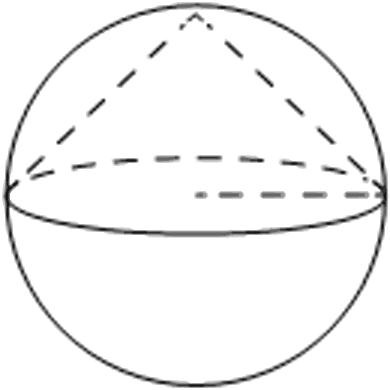
Через среднюю линию основания треугольной призмы, объём которой равен $44$, проведена плоскость, параллельная боковому ребру. Найдите объём отсечённой треугольной призмы.
Цилиндр и конус имеют общие основание и высоту. Объём конуса равен $22$. Найдите объём цилиндра.
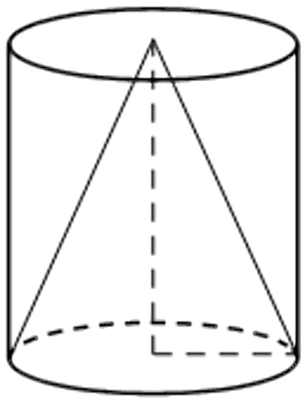
Шар, объём которого равен $10$, вписан в цилиндр. Найдите объём цилиндра.
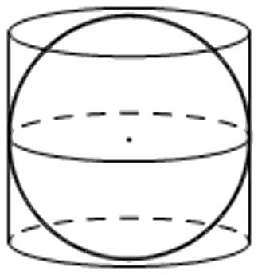
Цилиндр вписан в прямоугольный параллелепипед. Радиус основания цилиндра равен $2$, высота цилиндра равна $8$. Найдите объём параллелепипеда.
Дано два цилиндра. Объём первого цилиндра равен $16$. У второго цилиндра высота в $4$ раза меньше, а радиус основания в $4$ раза больше, чем у первого. Найдите объём второго цилиндра.
Во сколько раз уменьшится объём конуса, если радиус его основания уменьшится в $12$ раз, а высота останется прежней?
В прямоугольном параллелепипеде $ABCDA_1B_1C_1D_1$ известно, что $AB=10$, $BC=6$, $AA_1=4$. Найдите объём многогранника, вершинами которого являются точки $A, B, C, D, A_1, B_1$.
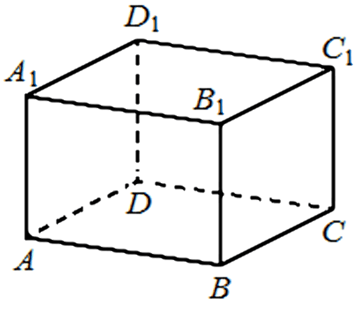
Найдите объём многогранника, вершинами которого являются вершины $B, C, A_1, B_1, C_1$ правильной треугольной призмы $ABCA_1B_1C_1$, площадь основания которой равна $12$, а боковое ребро равно $11$.
Объём куба равен $224$. Найдите объём треугольной призмы, отсекаемой от куба плоскостью, проходящей через середины двух рёбер, выходящих из одной вершины, и параллельной третьему ребру, выходящему из этой же вершины.
Около конуса описана сфера (сфера содержит окружность основания конуса и его вершину). Центр сферы находится в центре основания конуса. Образующая конуса равна $37\sqrt{2}$. Найдите радиус сферы.
Через среднюю линию основания треугольной призмы, объём которой равен $100$, проведена плоскость, параллельная боковому ребру. Найдите объём отсечённой треугольной призмы.
Цилиндр и конус имеют общие основание и высоту. Объём конуса равен $32$. Найдите объём цилиндра.
Шар вписан в цилиндр. Площадь полной поверхности цилиндра равна $57$. Найдите площадь поверхности шара.
Цилиндр вписан в прямоугольный параллелепипед. Радиус основания цилиндра равен $4$, высота цилиндра равна $4$. Найдите объём параллелепипеда.
Дано два цилиндра. Объём первого цилиндра равен $4$. У второго цилиндра высота в $3$ раза меньше, а радиус основания в $3$ раза больше, чем у первого. Найдите объём второго цилиндра.
Во сколько раз увеличится объём конуса, если радиус его основания увеличится в $8$ раз, а высота останется прежней?
В прямоугольном параллелепипеде $ABCDA_1B_1C_1D_1$ известно, что $AB=3$, $BC=5$, $AA_1=6$. Найдите объём многогранника, вершинами которого являются точки $A, B, C, D, C_1$.
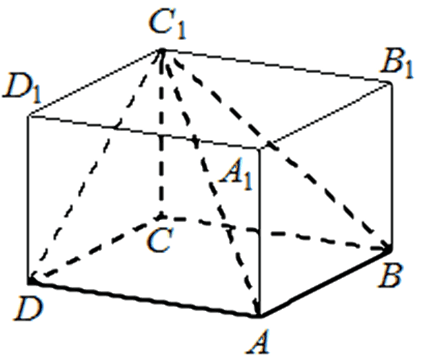
Найдите объём многогранника, вершинами которого являются вершины $B, C, A_1, B_1, C_1$ правильной треугольной призмы $ABCA_1B_1C_1$, площадь основания которой равна $12$, а боковое ребро равно $12$.
Объём куба равен $176$. Найдите объём треугольной призмы, отсекаемой от куба плоскостью, проходящей через середины двух рёбер, выходящих из одной вершины, и параллельной третьему ребру, выходящему из этой же вершины.
Около конуса описана сфера (сфера содержит окружность основания конуса и его вершину). Центр сферы находится в центре основания конуса. Образующая конуса равна $54\sqrt{2}$. Найдите радиус сферы.
Через среднюю линию основания треугольной призмы, объём которой равен $68$, проведена плоскость, параллельная боковому ребру. Найдите объём отсечённой треугольной призмы.
Цилиндр и конус имеют общие основание и высоту. Объём цилиндра равен $78$. Найдите объём конуса.
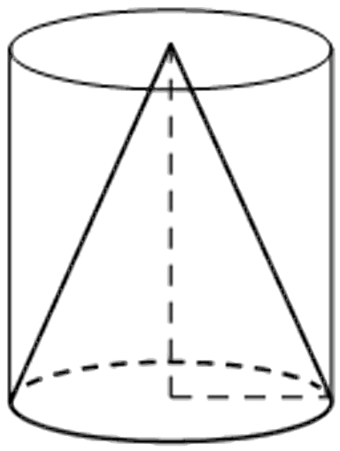
Цилиндр, объём которого равен $57$, описан около шара. Найдите объём шара.
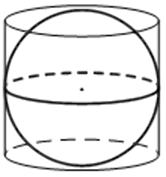
Цилиндр вписан в прямоугольный параллелепипед. Радиус основания и высота цилиндра равны $5$. Найдите объём параллелепипеда.
Дано два цилиндра. Объём первого цилиндра равен $12$. У второго цилиндра высота в $3$ раза меньше, а радиус основания в $3$ раза больше, чем у первого. Найдите объём второго цилиндра.
Во сколько раз увеличится объём конуса, если его высота увеличится в $4$ раз, а радиус основания останется прежним?
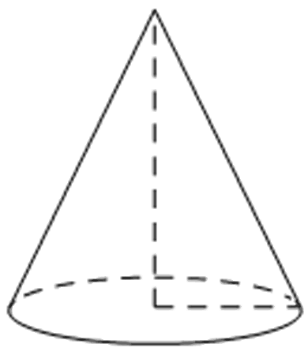
В прямоугольном параллелепипеде $ABCDA_1B_1C_1D_1$ известно, что $AB=4$, $BC=3$, $AA_1=5$. Найдите объём многогранника, вершинами которого являются точки $A, B, C, D, C_1$.
Найдите объём многогранника, вершинами которого являются вершины $A, B, C, B_1$ правильной треугольной призмы $ABCA_1B_1C_1$, площадь основания которой равна $7$, а боковое ребро равно $3$.
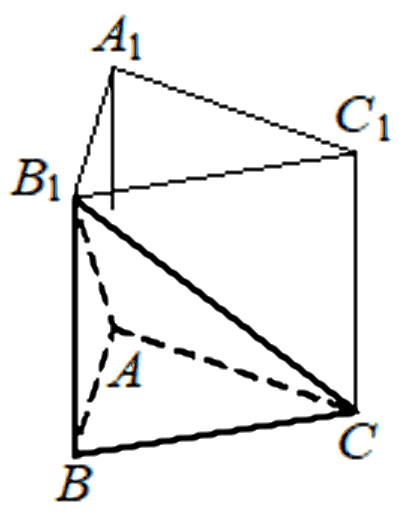
Объём куба равен $304$. Найдите объём треугольной призмы, отсекаемой от куба плоскостью, проходящей через середины двух рёбер, выходящих из одной вершины, и параллельной третьему ребру, выходящему из этой же вершины.
Около конуса описана сфера (сфера содержит окружность основания конуса и его вершину). Центр сферы находится в центре основания конуса. Радиус сферы равен $84\sqrt{2}$. Найдите длину образующей конуса.
Через среднюю линию основания треугольной призмы проведена плоскость, параллельная боковому ребру. Площадь боковой поверхности отсечённой треугольной призмы равна $26$. Найдите площадь боковой поверхности исходной призмы.
Цилиндр и конус имеют общие основание и высоту. Объём конуса равен $40$. Найдите объём цилиндра.
Цилиндр, объём которого равен $78$, описан около шара. Найдите объём шара.
Цилиндр вписан в прямоугольный параллелепипед. Радиус основания цилиндра равен $6$, высота цилиндра равна $12$. Найдите объём параллелепипеда.
Дано два цилиндра. Объём первого цилиндра равен $23$. У второго цилиндра высота в $4$ раза меньше, а радиус основания в $4$ раза больше, чем у первого. Найдите объём второго цилиндра.
Во сколько раз увеличится объём конуса, если его высота увеличится в $7$ раз, а радиус основания останется прежним?
В прямоугольном параллелепипеде $ABCDA_1B_1C_1D_1$ известно, что $AB=3$, $BC=9$, $AA_1=6$. Найдите объём многогранника, вершинами которого являются точки $A, B, C, D, A_1$.
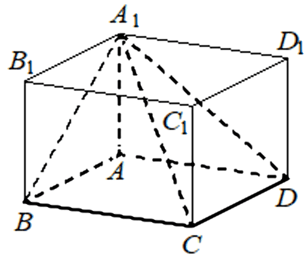
Найдите объём многогранника, вершинами которого являются вершины $A, B, C, C_1$ правильной треугольной призмы $ABCA_1B_1C_1$, площадь основания которой равна $9$, а боковое ребро равно $8$.
Объём куба равен $216$. Найдите объём треугольной призмы, отсекаемой от куба плоскостью, проходящей через середины двух рёбер, выходящих из одной вершины, и параллельной третьему ребру, выходящему из этой же вершины.
Около конуса описана сфера (сфера содержит окружность основания конуса и его вершину). Центр сферы находится в центре основания конуса. Образующая конуса равна $8\sqrt{2}$. Найдите радиус сферы.
Через среднюю линию основания треугольной призмы, объём которой равен $84$, проведена плоскость, параллельная боковому ребру. Найдите объём отсечённой треугольной призмы.
Цилиндр и конус имеют общие основание и высоту. Объём цилиндра равен $15$. Найдите объём конуса.
Площадь сечения шара плоскостью, проходящей через центр шара, равна $32$. Найдите площадь поверхности шара.
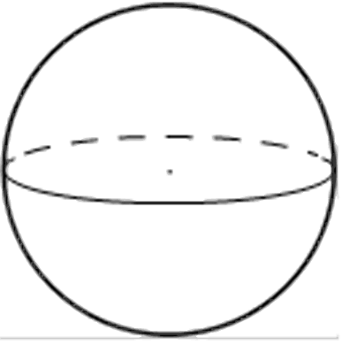
Цилиндр вписан в прямоугольный параллелепипед. Радиус основания и высота цилиндра равны $8$. Найдите объём параллелепипеда.
Дано два цилиндра. Объём первого цилиндра равен $32$. У второго цилиндра высота в $3$ раза меньше, а радиус основания в $3$ раза больше, чем у первого. Найдите объём второго цилиндра.
Во сколько раз уменьшится объём конуса, если радиус его основания уменьшится в $9$ раз, а высота останется прежней?
В прямоугольном параллелепипеде $ABCDA_1B_1C_1D_1$ известно, что $AB=10$, $BC=6$, $AA_1=8$. Найдите объём многогранника, вершинами которого являются точки $A, B, C, D, A_1, B_1$.
Найдите объём многогранника, вершинами которого являются вершины $A, B, C, B_1$ правильной треугольной призмы $ABCA_1B_1C_1$, площадь основания которой равна $12$, а боковое ребро равно $6$.
Объём куба равен $232$. Найдите объём треугольной призмы, отсекаемой от куба плоскостью, проходящей через середины двух рёбер, выходящих из одной вершины, и параллельной третьему ребру, выходящему из этой же вершины.
Около конуса описана сфера (сфера содержит окружность основания конуса и его вершину). Центр сферы находится в центре основания конуса. Образующая конуса равна $57\sqrt{2}$. Найдите радиус сферы.
Через среднюю линию основания треугольной призмы проведена плоскость, параллельная боковому ребру. Найдите объём этой призмы, если объём отсечённой треугольной призмы равен $10$.

Цилиндр и конус имеют общие основание и высоту. Объём конуса равен $2$. Найдите объём цилиндра.
Шар вписан в цилиндр. Площадь полной поверхности цилиндра равна $21$. Найдите площадь поверхности шара.
Цилиндр вписан в прямоугольный параллелепипед. Радиус основания цилиндра равен $7$, высота цилиндра равна $6$. Найдите объём параллелепипеда.
Дано два цилиндра. Объём первого цилиндра равен $3$. У второго цилиндра высота в $4$ раза меньше, а радиус основания в $2$ раза больше, чем у первого. Найдите объём второго цилиндра.
Во сколько раз уменьшится объём конуса, если радиус его основания уменьшится в $15$ раз, а высота останется прежней?
В прямоугольном параллелепипеде $ABCDA_1B_1C_1D_1$ известно, что $AB=3$, $BC=6$, $AA_1=8$. Найдите объём многогранника, вершинами которого являются точки $A, B, C, D, A_1, B_1$.
Найдите объём многогранника, вершинами которого являются вершины $A, B, C, C_1$ правильной треугольной призмы $ABCA_1B_1C_1$, площадь основания которой равна $3$, а боковое ребро равно $6$.
Объём куба равен $272$. Найдите объём треугольной призмы, отсекаемой от куба плоскостью, проходящей через середины двух рёбер, выходящих из одной вершины, и параллельной третьему ребру, выходящему из этой же вершины.
Около конуса описана сфера (сфера содержит окружность основания конуса и его вершину). Центр сферы находится в центре основания конуса. Образующая конуса равна $82\sqrt{2}$. Найдите радиус сферы.
Площадь боковой поверхности треугольной призмы равна $50$. Через среднюю линию основания призмы проведена плоскость, параллельная боковому ребру. Найдите площадь боковой поверхности отсечённой треугольной призмы.
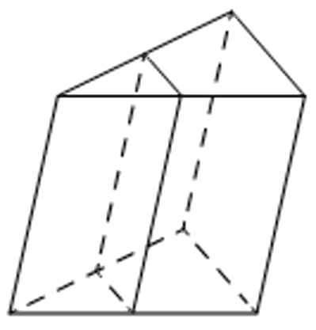
Цилиндр и конус имеют общие основание и высоту. Высота цилиндра равна радиусу основания. Площадь боковой поверхности конуса равна $7\sqrt{2}$. Найдите площадь боковой поверхности цилиндра.
Площадь сечения шара плоскостью, проходящей через центр шара, равна $36$. Найдите площадь поверхности шара.
Цилиндр вписан в прямоугольный параллелепипед. Радиус основания цилиндра равен $2$, высота цилиндра равна $5$. Найдите объём параллелепипеда.
Дано два цилиндра. Объём первого цилиндра равен $30$. У второго цилиндра высота в $5$ раза меньше, а радиус основания в $4$ раза больше, чем у первого. Найдите объём второго цилиндра.
Во сколько раз увеличится объём конуса, если радиус его основания увеличится в $15$ раз, а высота останется прежней?
В прямоугольном параллелепипеде $ABCDA_1B_1C_1D_1$ известно, что $AB=5$, $BC=4$, $AA_1=3$. Найдите объём многогранника, вершинами которого являются точки $A, B, C, D, B_1$.
Найдите объём многогранника, вершинами которого являются вершины $A, B, C, B_1$ правильной треугольной призмы $ABCA_1B_1C_1$, площадь основания которой равна $12$, а боковое ребро равно $7$.
Объём куба равен $40$. Найдите объём треугольной призмы, отсекаемой от куба плоскостью, проходящей через середины двух рёбер, выходящих из одной вершины, и параллельной третьему ребру, выходящему из этой же вершины.
Около конуса описана сфера (сфера содержит окружность основания конуса и его вершину). Центр сферы находится в центре основания конуса. Образующая конуса равна $67\sqrt{2}$. Найдите радиус сферы.
Через среднюю линию основания треугольной призмы, объём которой равен $120$, проведена плоскость, параллельная боковому ребру. Найдите объём отсечённой треугольной призмы.
Цилиндр и конус имеют общие основание и высоту. Высота цилиндра равна радиусу основания. Площадь боковой поверхности конуса равна $14\sqrt{2}$. Найдите площадь боковой поверхности цилиндра.
Площадь сечения шара плоскостью, проходящей через центр шара, равна $29$. Найдите площадь поверхности шара.
Цилиндр вписан в прямоугольный параллелепипед. Радиус основания и высота цилиндра равны $9$. Найдите объём параллелепипеда.
Дано два цилиндра. Объём первого цилиндра равен $36$. У второго цилиндра высота в $2$ раза меньше, а радиус основания в $2$ раза больше, чем у первого. Найдите объём второго цилиндра.
Во сколько раз увеличится объём конуса, если его высота увеличится в $14$ раз, а радиус основания останется прежним?
В прямоугольном параллелепипеде $ABCDA_1B_1C_1D_1$ известно, что $AB=4$, $BC=7$, $AA_1=6$. Найдите объём многогранника, вершинами которого являются точки $A, B, C, A_1, B_1, C_1$.
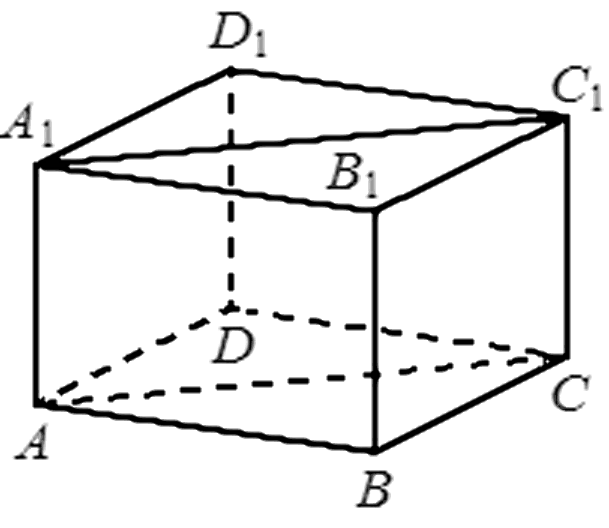
Найдите объём многогранника, вершинами которого являются вершины $B, C, A_1, B_1, C_1$ правильной треугольной призмы $ABCA_1B_1C_1$, площадь основания которой равна $3$, а боковое ребро равно $7$.
Объём куба равен $184$. Найдите объём треугольной призмы, отсекаемой от куба плоскостью, проходящей через середины двух рёбер, выходящих из одной вершины, и параллельной третьему ребру, выходящему из этой же вершины.
Около конуса описана сфера (сфера содержит окружность основания конуса и его вершину). Центр сферы находится в центре основания конуса. Образующая конуса равна $29\sqrt{2}$. Найдите радиус сферы.
Через среднюю линию основания треугольной призмы проведена плоскость, параллельная боковому ребру. Найдите объём этой призмы, если объём отсечённой треугольной призмы равен $6$.
Цилиндр и конус имеют общие основание и высоту. Объём конуса равен $4$. Найдите объём цилиндра.
Площадь сечения шара плоскостью, проходящей через центр шара, равна $24$. Найдите площадь поверхности шара.
Цилиндр вписан в прямоугольный параллелепипед. Радиус основания цилиндра равен $2$, высота цилиндра равна $10$. Найдите объём параллелепипеда.
Дано два цилиндра. Объём первого цилиндра равен $37$. У второго цилиндра высота в $3$ раза меньше, а радиус основания в $3$ раза больше, чем у первого. Найдите объём второго цилиндра.
Во сколько раз увеличится объём конуса, если его высота увеличится в $12$ раз, а радиус основания останется прежним?